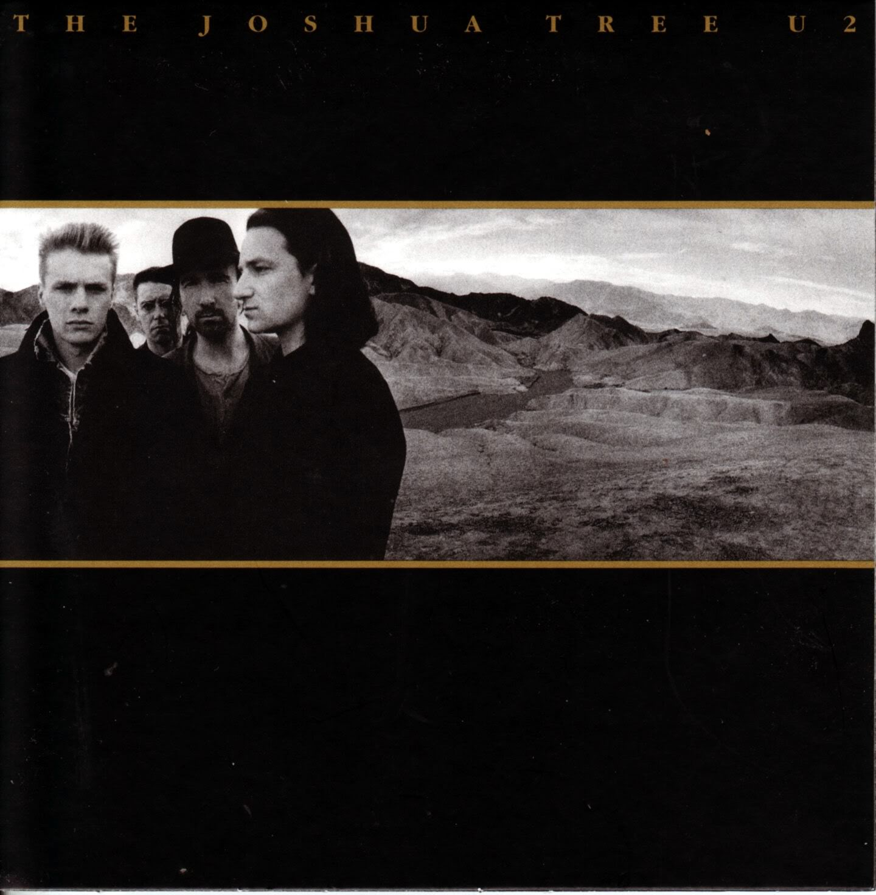

The Band:
U2 is an Irish alternative rock band that was most popular during the 80's and 90's, with a couple hits coming into the 2000's. Their most popular songs outside of this album are One, Beautiful Day, and Sunday Bloody Sunday.

U2 is an Irish alternative rock band that was most popular during the 80's and 90's, with a couple hits coming into the 2000's. Their most popular songs outside of this album are One, Beautiful Day, and Sunday Bloody Sunday.
This album is important because it combined Irish roots music with rock music and has a great atmosphere. Songs like "Where The Streets Have No Name" have a huge sound that make them memorable and help tell a story. To me, this album is very nostalgic since it's one of my dad's favorite albums, and therefore acts as a soundtrack to my childhood.